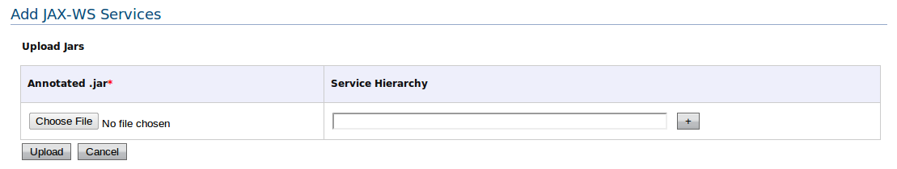

The WSO2 SOA platform provides a JAX-WS component to deploy JAX-WS annotated .jar files as Web services. It is extremely simple, and there is no need to write services.xml files. You have to write your web service class (just like a POJO) and then annotate it using JAX-WS annotations. You can then deploy it as a web service simply by creating a .jar file, which includes your service class.
First write your Web service logic as follows.
public class ExampleService {
public String reverse(String input) {
StringBuffer buff = new StringBuffer();
for (int i=input.length()-1; i>=0; i--) {
buff.append(input.charAt(i));
}
return buff.toString();
}
}
Then annotate it as follows. Compile and include it in a .jar file.
import javax.jws.WebMethod;
import javax.jws.WebService;
@WebService
public class ExamplePOJOService {
@WebMethod
public String reverse(String input) {
StringBuffer buff = new StringBuffer();
for (int i=input.length()-1; i>=0; i--) {
buff.append(input.charAt(i));
}
return buff.toString();
}
}
Note: For more information on writing JAXWS annotated web services, refer to the JAXWS Axis2 User Guide.
This feature is used to upload annotated .jar files and resource .jars which are dependencies used by the service implementation.

Figure 1: Uploading JAX-WS Services
Example: Consider a service "JAXWSTest"
If no service hierarchy -> EPR is ../services/JAXWSTest
With service hierarchy foo/bar/1.0.0 -> EPR is ../services/foo/bar/1.0.0/JAXWSTest
You can check your service on the Service List page. You can also use the tools available on this page to check the status of the service and control the quality of the service.